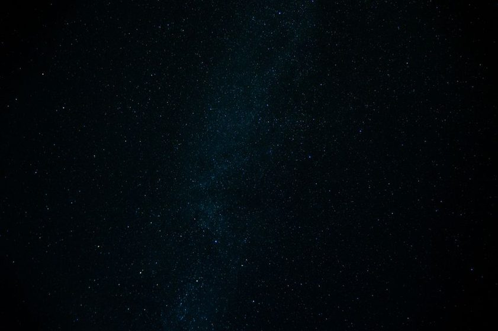

Everything I Check the Afternoon Before a Clear Night
Clear skies get wasted more often by a lack of a plan than by clouds. The short list that gets run through before the gear ever comes out.

By four in the afternoon the sky over my yard has already started deciding what kind of night I'll get. I pull up a cloud forecast, check a scribbled moon calendar taped inside a kitchen cabinet, and start trimming a target list that's almost always too long by half. None of this takes more than ten minutes, and none of it involves the telescope. The eyepiece case stays zipped until the plan is set, not before it. I've lost more good nights to walking outside without one than I've ever lost to actual clouds — and a Bortle 7 sky punishes that kind of laziness fast.
Moon Phase Comes Before Anything Else
The first thing I check isn't cloud cover — it's the moon. A near-full moon rising at dusk changes the entire plan: faint targets are out, and the night becomes an argument for double stars, planets, or the moon itself. A thin crescent setting early, on the other hand, opens up a couple of hours of genuinely dark sky before it even shows up, which from a light-polluted yard is worth more than people expect. I keep a paper moon calendar because the apps buried the rise and set times three taps deep, and I got tired of digging for a number I check almost daily. Phase alone isn't the full story — altitude matters too. A gibbous moon low on the horizon does far less damage to the sky overhead than the same moon near zenith.
A Five-Minute Seeing Note
Seeing and transparency get lumped together by people who haven't lost a night to the difference. Transparency is about haze, humidity, and thin cloud — whether the sky is clear enough to reveal faint, extended objects at all. Seeing is about steadiness — whether the air above me is calm enough for a planet to hold a crisp edge instead of shimmering like it's underwater. A fast jet stream overhead tends to mean rough seeing even under a technically clear sky, and I've set up for a planetary night more than once only to watch a planet boil at the eyepiece for an hour. I jot a rough note — good, fair, or poor for each — before I ever step outside, because it decides whether tonight is a planet night, a double-star night, or a wide-field binocular night.
A clear sky is not the same thing as a good night. One is weather. The other is a decision made hours earlier.
Picking Targets by the Horizon I Actually Have
A star chart doesn't know about the neighbor's roofline, the maple that's grown four feet since spring, or the sodium light two yards over that never got upgraded. My real horizon isn't the theoretical one — it's a lumpy, asymmetric shape I've mapped out over enough seasons that I could probably draw it from memory. Reading a Bortle map tells you the general damage a sky like mine tends to take, but it says nothing about where the actual gaps are, and that map only becomes useful once you've stood in the yard and looked. So before dark I check what's rising in the direction I have an actual window — usually east-southeast, since the west side is a wall of pine — and build the shortlist around that, not around whatever looks best on a planetarium app pointed at an unobstructed horizon I don't have.
The Checklist, Reduced to a Table
Written down, the afternoon routine is shorter than it sounds. Five checks, most of them well under a minute, that decide what gets set up after dinner:
| Check | What I'm Looking For | What It Decides |
|---|---|---|
| Moon phase & rise/set | Illumination and hours above the horizon | Faint targets vs. bright ones |
| Seeing forecast | Upper-level wind, jet stream speed | Planets vs. wide-field |
| Transparency forecast | Haze, humidity, thin cloud | Whether faint objects are worth trying at all |
| Horizon check | What's actually open past rooflines and trees | Which direction the shortlist leans |
| Local light events | A game, floodlights, a holiday display nearby | Whether a normally-dark patch gets ruined tonight |
In Order, Before the Gear Comes Out
Run in sequence, the same five checks turn into a routine that takes less time than making coffee:
- Check the moon's phase and its rise or set time for tonight.
- Pull a seeing and transparency read from two independent sources.
- Walk the yard and confirm which horizon is actually open tonight, not last week.
- Shortlist two or three targets that fit both the sky condition and the open horizon.
- Pack the bag and test the red flashlight while there's still light to see by.
Callout — The Two-Source Rule
One seeing forecast on its own is a guess with confidence attached. I check two independent sources and only trust the read when they roughly agree; when they don't, I plan for the worse of the two. It's saved more nights from disappointment than any single piece of gear has.
Packing While It's Still Light
Everything that needs a decision gets decided before the sun goes down. Batteries get tested, not assumed. The red flashlight gets switched on for two seconds to confirm it isn't the white one from the drawer. If binoculars are the plan for the night — and on a hazy or moon-bright night, they usually are, since a wider aperture magnifies the sky's light pollution as much as it magnifies the target — I set them by the door instead of digging through a closet at nine at night. That habit alone has probably saved more observing time than any single upgrade I've bought. None of this is glamorous. It's closer to a pre-flight walk-around than anything astronomical, and that's largely the point: by the time it's actually dark, there's nothing left to figure out.
Note
These are observing notes from one Bortle 7 backyard, not a general observing guide. Light domes, obstructed horizons, and local seeing vary enough from yard to yard that the only reliable map is the one built by standing outside and watching, season after season.